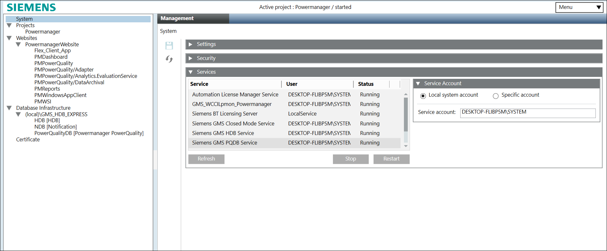
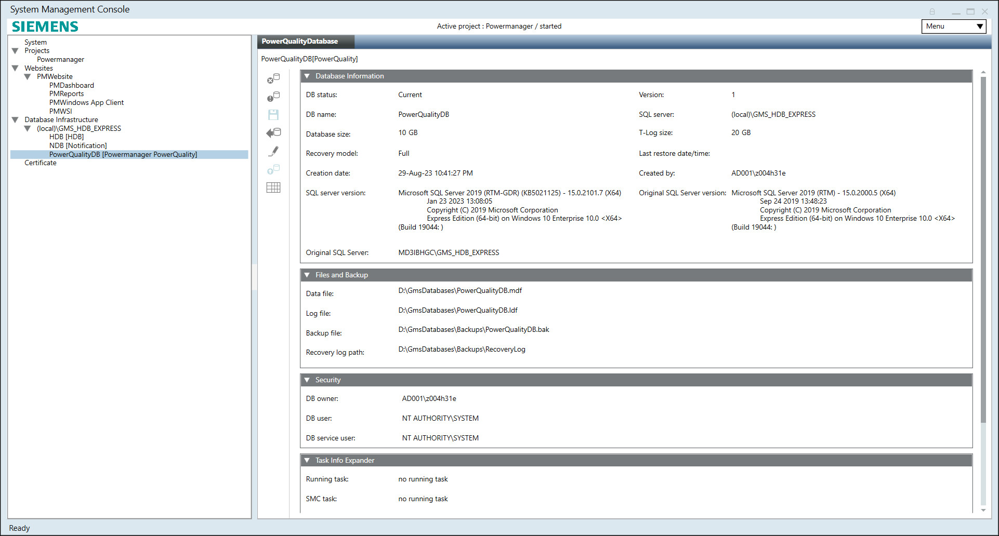

Create a Local Database
- In the SMC tree, select Database Infrastructure > [SQL Server Name].
- Click Create
 .
. - Select Create Powermanager PowerQuality Database from the drop down list.
- Open the Database Information expander and enter data into the following fields:
- DB name: Enter a name for the PowerQuality Database (do not use special characters, for more information, see Settings.)
- Database size: Set the size of the PowerQuality Database:
‒ Maximum 10 GB for SQL Server Express
‒ Maximum 250 GB for SQL Server Enterprise Edition
(For additional information on the database size, see the NOTE following this procedure). - Recovery model: Select the recovery model Simple or Full for the PowerQuality DB. The recovery model can be manually changed in both directions at any time. By default, recovery model is set to full. (For more information, see Recovery Models).
- Select the Files and Paths expander (do not use special characters - for more information, see Files and Paths) and enter the following data:
- Data File Path: C:\Gmsdatabases\[PowerQualityDatabase].mdf
- Transaction Log Path: C:\Gmsdatabases\[PowerQualityDatabase].ldf
- Backup File Path: C:\Gmsdatabases\Backups\[PowerQualityDatabase].bak
- Recovery log path: C:\Gmsdatabases\Backups\RecoveryLog
NOTE: If you do not use the standard paths in the Data File Path, Transaction Log Path, Backup File Path, and Recovery log path fields and if the SQL Server is on a different computer, you must first create the folders before you click Save. - Select the Security expander and check the displayed user names.
a. DB owner: Desigo CC SMC user who requires PowerQuality Database owner rights. You can change it as required. The PowerQuality Database owner must be different than the PowerQuality Database user and the PowerQuality Database service user.
b. DB user: Desigo CC project user who requires PowerQuality Database user rights for read and write operations. You can change it as required in System Account Settings. See Settings Expander .
c. DB service user: Desigo CC service user who requires PowerQuality Database service user rights for maintenance operations. To change PowerQuality service user, Refer Configure the Service Account. 
- Click Save
 .
.
- The PowerQuality Database is created and displays in the SMC tree. This may take a few minutes depending on the selected database size. When you create a new PowerQuality Database it gets automatically linked to the SQL Server.
- The PowerQuality Database starts automatically.
- PowerQuality Database is logged after linking it to the project.

NOTE:
We recommend not encrypting the hard disk where the database is located. If you encrypt the hard disk with a software application, such as BitLocker, the SMC may not be able to connect to the database. If you want to encrypt your hard disk, use the SQL Server Enterprise Edition, which has Transparent Data Encryption (TDE).
NOTICE

Data Loss
Data loss will differ depending on the selected recovery model (Simple or Full). For more information, see Recovery Models.
